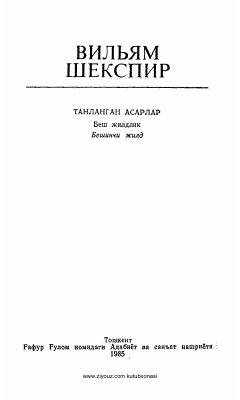

QEVilyam Shekspirning mashhur dramatik asari.
Ushbu kitob buyuk ingliz dramaturgi Vilyam Shekspirning taniqli asarlaridan biri bo'lib, unda insoniy munosabatlar, rashk, adolat va kechirim kabi abadiy mavzular yoritilgan. Asar muallifning besh jildlik tanlangan asarlar to'plamining beshinchi jildiga kiritilgan. Kitob o'quvchilarni chuqur falsafiy fikrlashga va inson qalbining murakkab qirralarini anglashga chorlaydi.